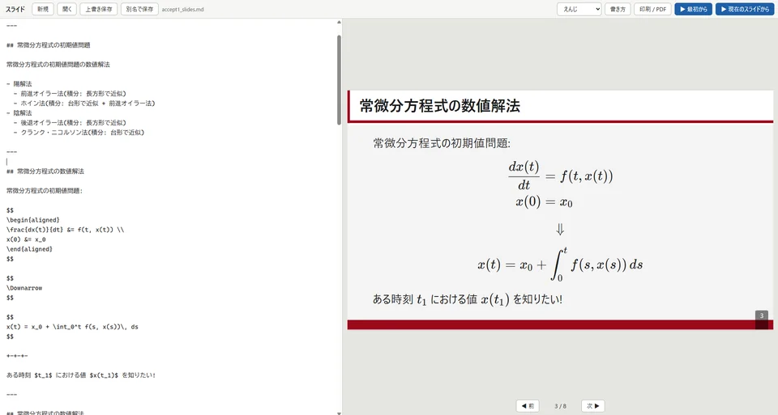

シンプルスライド ★
Markdown で書く、数式に強いスライド。
PowerPoint や Keynote は環境で見た目が変わり、数式も書きにくい。それを解決するために作りました。
数式・定理の囲み枠・段階表示・発表中のペン書き込み・PDF 印刷に対応。生成 AI にスライドのソースやデザインを書かせることもできます。
生成 AI にスライドの Markdown を書かせるときは、最初にこのプロンプトを AI に渡してください。
デザイン(背景と色)を作らせるときは、こちらのプロンプトを渡します。AI が書いた JSON をファイルに保存し、配色の選択欄の「デザインを読み込む…」で取り込みます。